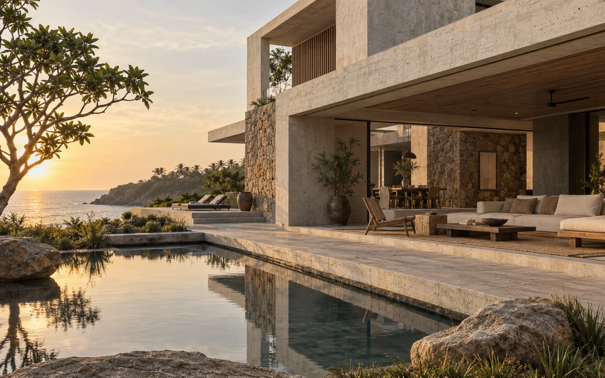

Make the threshold useful
The covered terrace is treated as a room, with enough depth for a table, circulation and a place to sit out of direct sun.
A shaded edge between the house and the garden.

The brief
The starting point was a home where the outdoor rooms would be used as often as the indoor ones. This study explores how a deep veranda could make that possible in a warm coastal setting.
Three decisions
The covered terrace is treated as a room, with enough depth for a table, circulation and a place to sit out of direct sun.
The visualisation uses a continuous horizontal roof to tie separate spaces together. Openings face the garden rather than competing for attention on the elevation.
Pale surfaces, dark joinery and a restrained landscape give the shaded spaces definition without adding more finishes.